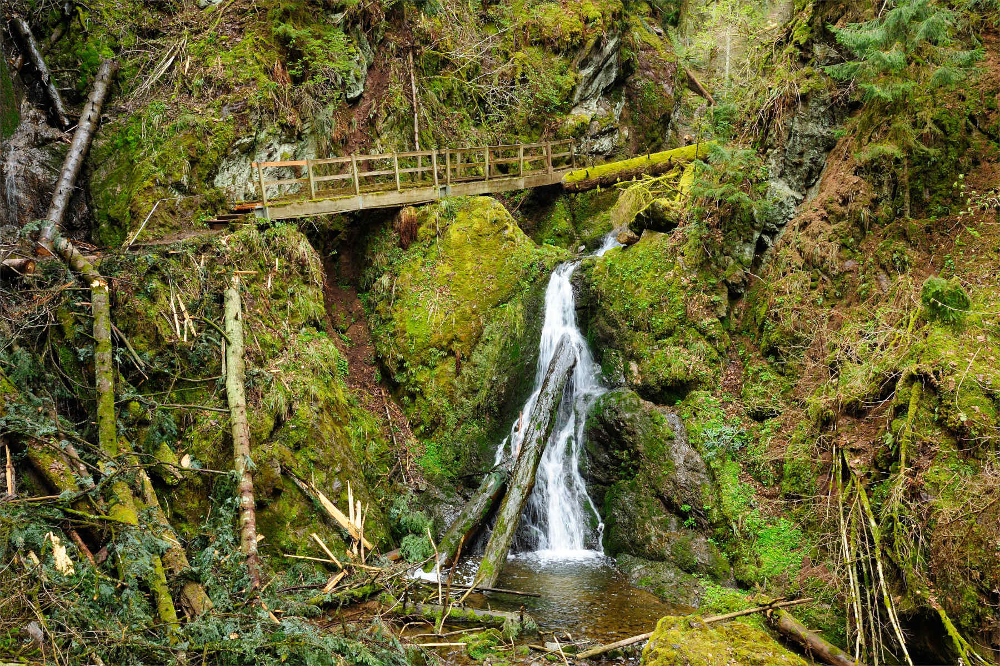
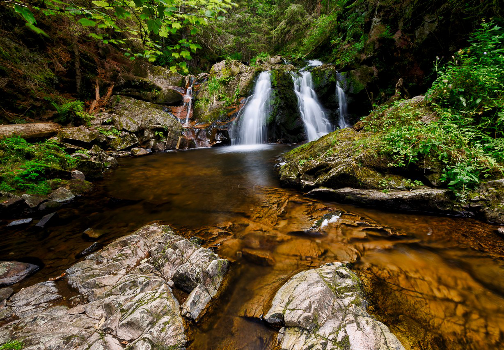

Als eine der letzten urwüchsigen Flusslandschaften Deutschlands bildet die Wutachschlucht ein einzigartiges Naturschauspiel im Schwarzwald: Da fallen die Muschelkalkwände der Wutachflühen bis zu 180 Meter tief ab. Das Wasser der Wutach bahnt sich rauschend seinen Weg durch Felsritzen und spitzt tosend über Steinwände und Geröll. Und auf insgesamt 33 Flusskilometern leben 1.200 unterschiedliche Pflanzen, 500 verschiedene Schmetterlings- und mehr als 30 geschützte Orchideenarten. Ein wahrlich bemerkenswertes Naturjuwel, das Sie auf unterschiedliche Art entdecken und erwandern können:
Das Wandern ist in der Wutachschlucht zwar ganzjährig erlaubt, doch gerade in den Wintermonaten trocknen die mit bis zu 18 % Steigung aufwartenden Wutachwanderwege nicht mehr ab, sodass diese gefährlich rutschig und abschüssig sein können. Grundsätzlich benötigen Sie für eine Wanderung durch die Schlucht festes Schuhwerk, das die Knöchel gut stützt. Zudem sind Wanderstöcke empfehlenswert.


RÖTENBACHSCHLUCHT
Die Rötenbachschlucht mündet nach 5,5 km in die Wutachschlucht. Besonders der untere Bereich des Baches hat sich tief ins Gebirge eingegraben. Über 7 Brücken und auf engen, anspruchsvollen Pfaden geht es hinunter.
Für Naturliebhabern und Wanderfreunden bietet die Rotenbachschlucht ein besonders schönes Ausflugsziel. Hier zeigt sich die ganze Vielfalt des Schwarzwaldes: dichte Wälder, wilde Bachläufe, felsige Wege und beeindruckende Felswände. Auch sportlich ist die Schluchtenwanderung eine Herausforderung. Auf Wanderer warten in der Rötenbachschlucht enge Wege, die sich immer tiefer ins Gebirge graben. Die Schlucht kann entlang des Rötenbachs durchwandert werden, der neben beeindruckenden Felsformationen sogar einen Wasserfall zu bieten hat. Natur pur, die zu entspanntem Wandern einlädt. Während der Tour überqueren an einigen Stellen Brücken den Bachlauf und hier und da gibt es kleine Hütten im Wald zu entdecken. Nach einer spannenden Reise entlang des Rötenbachs mündet die Schlucht im Schwarzwald schließlich in die Wutachschlucht.